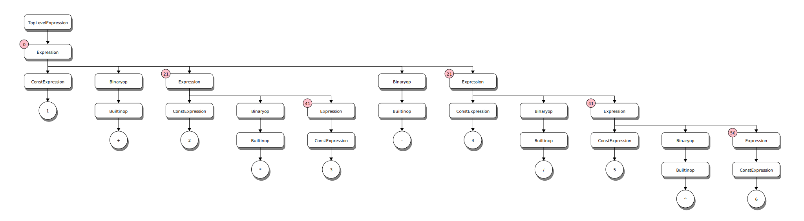
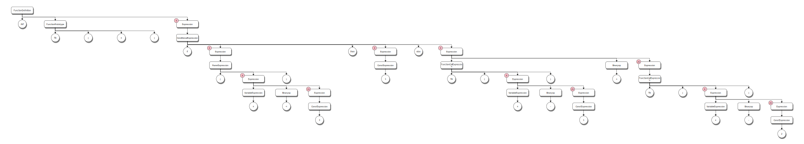
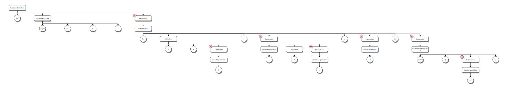

Parse Tree Examples
Simple Expressions (Chapters 3,4)
Basic operators
1 + 2 * 3 - 4 / 5 ^ 6;

Note
The small circle in the upper left corner of the Expression nodes is the precedence value at the entry to the rule. ANTLR uses a precendence climbing algorithm so this number indicates the precedence for the expression in relation to others.
Note
The parse tree for the expression has 5 children that are in evaluation order. That is, evaluation of the expression starts at the left most child and proceeds across to the right most child. Since, all binary operations include an operator symbol the evaluation would consume the children (other than the first one) as an operator and right hand side pair. this is used in the code generation when processing expression nodes.
If-Else control flow
Given the following definition of a recursive function to compute fibonacci numbers
def fib(x)
if (x < 3) then
1
else
fib(x-1)+fib(x-2);
The parse tree looks like this:

For loop
Given the following kaleidoscope function definition:
extern putchard(char);
def printstar(n)
for i = 1, i < n, 1.0 in
putchard(42) # ascii 42 = '*'
The parse tree looks like this:

User defined operators
Given the following operator definitions:
# Logical unary not.
def unary!(v)
if v then
0
else
1;
# Define > with the same precedence as <.
def binary> 10 (LHS RHS)
RHS < LHS;
# Binary "logical or", (note that it does not "short circuit")
def binary| 5 (LHS RHS)
if LHS then
1
else if RHS then
1
else
0;
# Define = with slightly lower precedence than relationals.
def binary== 9 (LHS RHS)
!(LHS < RHS | LHS > RHS);
The epression 2 == 3 | 5 < 4 | !1; generates the following parse tree